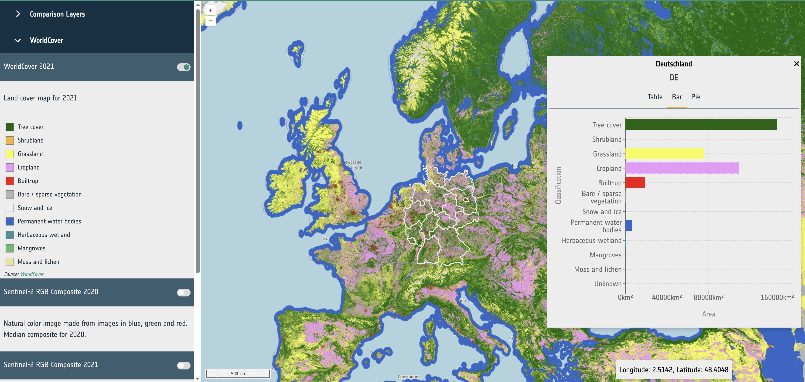
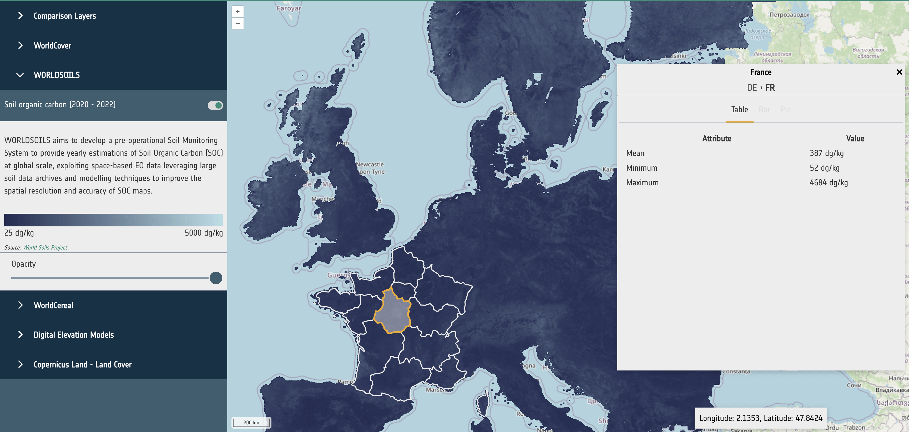

Data Provider Guidelines
Requirements
Table 1 outlines the interoperability guidelines for EO projects and data providers who wish to deliver their datasets to APEx for integration within the ESA Project Results Repository (PRR) for long-term preservation and their utilisation within the APEx Project Environments. By fulfilling these requirements, APEx ensures seamless integration, discoverability, and usability of the datasets across the ESA EO ecosystem, facilitating broader access and reusability within the EO community.
Most of these requirements focus on standardising dataset metadata, formats, and access methods to ensure compatibility with existing tools and support their efficient exploitation. In particular, datasets should adhere to well-established EO data standards and provide consistent, machine-readable metadata descriptions.
APEx supports integration primarily through recognised standards such as STAC (SpatioTemporal Asset Catalogue) and cloud-native data formats. This ensures that almost any EO dataset can be made available as a ready-to-use resource in the ESA PRR and used through the APEx tooling.
Overall, the objective is to streamline and simplify the delivery of high-quality, interoperable EO datasets to APEx, fostering wider adoption and enabling advanced use cases in downstream applications.
| ID | Requirement | Description |
|---|---|---|
| DATA-REQ-01 | EO project results with respect to raster data, shall be delivered as cloud-native datasets. | Where possible, cloud optimized GeoTIFF [1] is preferred. For more complex datasets, GeoZarr [2] and CF-Compliant netCDF [3] is a good alternative. Use of the still evolving GeoZarr [2] format requires confirmation by APEx and may result in future incompatibility if the selected flavour is not standardised eventually. Additional recommendations for the usage of file formats within the APEx services are available below. |
| DATA-REQ-02 | EO project results with respect to vector data, shall be delivered as cloud-native datasets. | Small datasets can use GeoJSON [4], FlatGeobuf [5] or GeoParquet [6] are recommended for larger datasets. |
| DATA-REQ-03 | EO project results should be accompanied with metadata in a STAC [7] format, including applicable STAC extensions. | The specific STAC profiles will align with the recommendations will align with the recommendations provided in the Metadata Recommendations section. |
File Format and Metadata Recommendations
This section provides recommendations for file formats and accompanying STAC metadata for EO project results delivered to APEx. The recommendations are organised around three additive use case scenarios. Every data provider should start with Scenario 1. If data also needs to be visualised, Scenario 2 applies on top. Scenario 3 provides additional recommendations in case the goal is to visualise the data within the APEx Geospatial Explorer. Projects are encouraged to consult with the APEx team if their use case does not fit within these guidelines.
The key underlying principle is to use cloud native formats, with adoption rate as a secondary criterion to ensure that the produced data can reach a broad audience beyond the earth observation community. Although the sections below provide extra guidance, we refer to the cloud native geospatial guide for a comprehensive comparison.
| Scenario | Formats | Builds on |
|---|---|---|
| 1 – Cloud-based Processing | COG, GeoZarr, NetCDF GeoParquet, FlatGeobuf, GeoJSON | (baseline) |
| 2 - Visualization | COG, GeoZarr GeoJSON, FlatGeobuf | Scenario 1 |
| 3 - Visualization in APEx Geospatial Explorer | COG, GeoZarr GeoJSON, FlatGeobuf | Scenario 1 + 2 |
STAC Metadata Recommendations
The STAC specification provides a comprehensive and interoperable framework for describing geospatial datasets. Within APEx, STAC serves as the foundation to enhance the discoverability, interoperability, and integration of data across a range of platforms, data catalogues, including the ESA Project Results Repository, and tools such as the APEx Geospatial Explorer.
To enhance interoperability, data providers are advised to consistently use a recommended set of STAC-related extensions and best practices. These recommendations come from community input and collaboration with other initiatives, like EarthCODE and EOEPCA, to ensure consistency across projects and promote the adoption of best practices.
The following chapters offer a summary of the suggested metadata for the different scenarios. For further details, please refer to the resources listed below.
Scenario 1: Cloud-based Processing
This scenario applies to all data providers publishing EO datasets to APEx. It defines the baseline format and metadata requirements that ensure datasets are cloud-accessible, machine-readable, and compatible with EO processing tools such as openEO workflows and datacube platforms.
Raster Data
Cloud Optimised GeoTIFF (COG) is the most widely supported format for geospatial raster data, and also one of the most efficient in terms of access costs. It is recommended as the default option to consider when publishing static data products. When combined with STAC metadata, COG can produce self-describing, FAIR-compliant datasets that are easily consumable by various services.
Generating Cloud Optimised GeoTIFF
If you are not familiar with COG or GeoTIFF generation, it is recommended to format your GeoTIFF files using a recent version of GDAL to ensure that they are compliant:
gdal_translate world.tif world_webmerc_cog.tif -of COGOrganising spatiotemporal multi-band datasets
Many datasets have multiple bands (or ‘variables’), or have a date associated with them. The general recommendation is to store a single band per GeoTIFF file and to create STAC items with one asset per band. This layout is commonly used by many other datasets and avoids the complexities of multi-band GeoTIFF files, which can be challenging to use.
An exception to this are the ‘RGB’ style products, where three bands are used to represent a single image. In this case, creating a Cloud Optimised GeoTIFF with three bands is an option.
For associating time information, create one GeoTIFF per timestamp, and one STAC item per timestamp. The GeoTIFF format has not built-in support for conveying time information, but STAC metadata is supporting this very well.
More detailed instructions on how to generate Cloud Optimised GeoTIFF for visualisation purposes are outlined in here.
Datacubes
GeoZarr
GeoZarr [2] is a format that is gaining traction in the geospatial community, although it is not yet as widely supported as Cloud Optimised GeoTIFF. Its main advantage lies in its ability to store complex multi-dimensional datasets that go beyond a simple 4D (x, y, time, bands) structure. Just like COG, Zarr allows for efficient cloud access.
At the time of writing, there are, however these important caveats:
- GeoZarr aims to define how to store geospatial raster data in Zarr format. This specification is now going through the standardisation process.
- By design, Zarr allows for many degrees of freedom, which requires the data producer to have a good understanding of the associated trade-offs. It is not guaranteed that tooling will automatically generate the most appropriate layout and chunk size for your use case.
- By design, Zarr stores data as separate files in a directory structure, optimising cloud access but making direct downloads less convenient.
NetCDF
NetCDF is a self-describing format with some properties similar to Zarr, but less optimised for cloud access. It can be useful for exchanging data cubes as single files through traditional methods. However, it is less recommended for convenient sharing of large datasets, for which either COG or Zarr provide better options.
Vector Data
GeoJSON [4] is suitable for small vector datasets. For larger datasets, FlatGeobuf [5] is recommended as it supports efficient streaming of features without requiring the full file to be downloaded, improving performance significantly. GeoParquet [6] is also a valid option for large vector datasets, particularly where columnar access patterns are beneficial.
STAC Metadata
When sharing geospatial datasets in cloud-optimised formats, such as Cloud Optimised GeoTIFF (COG), NetCDF, Zarr and FlatGeobuf, it is essential to embed as much relevant metadata as possible directly within the files. Although these formats are designed for efficient cloud access, their interoperability potential is enhanced when the files carry rich, standardised metadata aligned with their respective specifications. Doing so not only improves data reuse by third-party tools but also enables more reliable automatic inference of STAC metadata during cataloguing or dataset publication.
Table 2 offers an overview of the general STAC recommendations for cloud-based processing. For more details and examples on adding this additional metadata to your results, please consult the specific tools (e.g. gdal, rasterio, …) for generating the results.
| ID | Level | Requirement | Description | |
|---|---|---|---|---|
| STAC-REC-01 | Collection / Item | The STAC collection and items should use STAC 1.1 or higher. | ||
| STAC-REC-02 | Collection | The STAC collection must follow the ESA PRR collection specifications. | This guarantees the collection is compatible for upload and registration in the ESA Project Results Repository. | |
| STAC-REC-03 | Collection / Item | Collections must be homogeneous: each item has the same assets and uses the same asset keys. | Consistent and homogeneous definition of assets simplifies client-side handling and supports datacube generation. | |
| STAC-REC-04 | Item | Each item must have at least one asset where the role is set to data. | This allows for accurate identification of assets containing the data. | |
| STAC-REC-05 | Item |
Each asset must include:
|
These properties help tools and platforms accurately import the dataset. Furthermore, the file properties allow the ESA PRR to perform extra quality checks. | |
| STAC-REC-06 | Item |
The projection extension must be used to identify the CRS, raster bounds and shape. At minimum the following must be defined:
|
The projection extension ensures that any tools accessing the data can accurately determine key raster properties without the performance overhead of inspecting the raster file. The choice of CRS should consider application-specific recommendations (e.g. Geospatial Explorer), where the use of multiple UTM zones can introduce complexity, performance issues, and limitations in features such as time series visualisation and constraints. If the goal is to visualise your data through the APEx Geospatial Explorer, please consider the projections that are currently supported, as defined in EXPLORER-REQ-07. |
|
| STAC-REC-07 | Item | To incorporate a time dimension, the item must define a datetime, start_datetime and end_datetime at the item level. Both properties contain a single value using ISO8601 time intervals. |
These properties enable tools to accurately identify the data’s temporal dimension, simplifying search and filtering within the STAC collection. For temporal dimensions, it is recommended to maintain the original level of granularity; data should not be aggregated from daily records to a single label unless specifically instructed by the user or noted in the metadata. When combining data and overlap exists, the user must indicate the methodology unless indicated in the metadata. |
|
| Raster Data (COG) | ||||
| STAC-REC-08 | Item |
The bands array must be used to identify band information in the raster, keep the order as identified in the array.
|
The bands array enables platforms and associated tools to accurately identify and map the various bands within the dataset without the need to access or process the underlying data directly. |
|
| STAC-REC-09 | Item | For other dimensions, the datacube extension must be provided. | ||
| STAC-REC-10 | Item |
The raster extension must be used to accurately specify the following attributes associated with the raster file:
|
The raster extension offers valuable information about the dataset, eliminating the need to directly access or analyse the data itself. For instance, when visualising, details like scale and offset can help convert raw values into real-world figures. | |
| Datacube (GeoZarr, NetCDF) | ||||
| STAC-REC-11 | Collection / Item |
The datacube extension (v2.x) should be used to properly describe the datacube:
|
The extension enables correct data parsing into a datacube by the platform or tool. A variable can be bands in EO data or meteorological variables like rain or temperature in meteorological data sets. |
|
Scenario 2: Visualisation
This scenario applies in addition to Scenario 1, when datasets need to be made available for visualisation purposes, for example, through web-based map viewers or geospatial portals. It extends the baseline requirements with metadata that enables tools to correctly configure rendering, colour maps, and rescaling without requiring direct access to the underlying data.
If the target visualisation platform is the APEx Geospatial Explorer, additionally follow the guidelines Scenario 3.
STAC Metadata
Next to general recommendations, described in Scenario 1, Table 3 provides an overview of the STAC recommendations that apply to data visualisation.
| ID | Level | Requirement | Description |
|---|---|---|---|
| STAC-REC-12 | Item |
In the case of categorical datasets, classification extension is recommended to identify the different classes used in the asset. For additional visualization support, it is recommend setting the title and color_hint properties to allow external tools, such as the APEx Geospatial Explorer to properly visualise the data. |
The classification extension supports the proper interpretation of categorical data that is included in the collection, item or asset. |
| METADATA-REC-07 | Item / Asset |
To support the visualization of the dataset, the render extension is recommended. The render extension allows the definition of the following properties:
|
The render extension supplies rendering tools, like the APEx Geospatial Explorer, with key data to auto-configure visualization settings, including rescaling and colour maps. |
Scenario 3: Visualisation in APEx Geospatial Explorer
This scenario applies in addition to Scenarios 1 and Scenario 2, when datasets are intended for visualisation in the APEx Geospatial Explorer specifically. It adds format-level requirements for optimal rendering performance in a browser environment, covering tile size, overview pyramids, and interleave settings for raster data, as well as file size constraints for vector data.
File Format Recommendations
Table 4 summarises the key formatting guidelines designed to enhance data visualisation in the APEx Geospatial Explorer.
| ID | Recommendation | Description | ||
|---|---|---|---|---|
| Raster Data (COG) | ||||
| EXPLORER-REC-01 |
Set the tile size to 256 or 512 pixels by configuring BLOCKSIZE to the appropriate value using gdal. |
The specific choice of tile size (BLOCKSIZE) will depend on whether the use case in the GE is for visualisation only, or for visualisation and pixel interrogation (data values / charts) with a performance trade off considerations. Please consult our additional recommendations for specific guidance, noting the interaction with interleave method is also relevant. |
||
| EXPLORER-REC-02 |
The dataset should include overviews that meet these criteria:
You can use the gdal OVERVIEW_RESAMPLING, OVERVIEWS, and OVERVIEW_COUNT settings to generate these overviews. |
Overviews are essential for performance as they allow quick visualisation of the data on different zoom levels, based on resampling at factors .2, 4, 8, 16, 32. If necessary, factor 2 can be skipped to reduce file size (using gdaladdo tool to build overviews), although performance will be impacted at some zoom scales. The objective is to strike an optimal balance between the number of overviews and the total file size. Please consult our additional recommendations for specific guidance. |
||
| EXPLORER-REC-03 |
For multi-band data, set INTERLEAVE to BAND with gdal to efficiently render band composites. |
Band interleaved data is a safe all round choice, but for specific scenarios / use cases, there may be performance benefits for pixel interleaved data. Please refer to Table 5 for specific use case examples, noting that the combination of tile size (BLOCKSIZE) is also relevant. |
||
| Vector Formats (GeoJSON, FlatGeobuf, GeoParquet) | ||||
| EXPLORER-REC-04 |
GeoJSON data sources should be kept below 5 Megabytes in size per file. |
GeoJSON is not partially readable, therefore each source will be fetched in entirety at the initial load of the Geospatial Explorer. Large sizes and number of sources can be detrimental to the performance of the Geospatial Explorer. For such data sets consider using a stream-able format such as FlatGeobuf [5]. |
||
| Tabular Formats (linked charts) | ||||
| EXPLORER-REC-05 |
External CSV files can be used as a source for chart data (e.g. time series), linked either to an entire data source, or to a specific feature in a vector dataset, whereby the CSV URL is referenced from a field property. CSV files would typically contain a date column and one or more data columns which are configured as series in a chart. CSV files should be kept below 5 Megabytes in size per file. |
Please note, CSV data is not supported in the ESA Project Results Repository. |
||
COG Formatting for the APEx Geospatial Explorer
The following GDAL command implements the recommended settings for Explorer-optimised COG files:
gdal_translate \
-of COG \
-co BLOCKSIZE=512 \
-co INTERLEAVE=BAND \
-co OVERVIEWS=AUTO \
input.tif output_cogAlternatively, where a custom set of overviews that skips the x2 level is required, a combination the following GDAL commands would be used:
gdal_translate input.tif temp.tif \
-co TILED=YES \
-co BLOCKXSIZE=512 \
-co BLOCKYSIZE=512 \
-co INTERLEAVE=BANDgdaladdo -r average temp.tif 4 8 16 32gdal_translate temp.tif output_cog.tif \
-of COG \
-co BLOCKSIZE=512 \
-co INTERLEAVE=BAND \
-co COPY_SRC_OVERVIEWS=YESTable 5 is based on the principles of accessing cloud-optimised data via web GIS technology. It is recommended that the EO project teams test their own sample outputs with the Geospatial Explorer to ascertain specific performance characteristics before processing full operational pipelines.
| Settings | Geospatial Explorer Use Cases | ||||
| Dataset Type | Tile Size | Interleave | Single-Band Web Viz | Colour Composite Web Viz | Pixel Interrorgation |
|---|---|---|---|---|---|
| Single-band raster | 512 | N/A | Best | N/A | Poor |
| Single-band raster | 256 | N/A | Good | N/A | Best |
| RGB (3-band) imagery | 512 | PIXEL | Best | Best | Good |
| RGB (3-band) imagery | 256 | PIXEL | Good | Good | Best |
| RGB (3-band) imagery | 512 | BAND | Average | Good | Good |
| RGB (3-band) imagery | 256 | BAND | Average | Average | Good |
| Multispectral (10-20 bands) | 512 | PIXEL | Good | Best | Average |
| Multispectral (10-20 bands) | 256 | PIXEL | Average | Good | Good |
| Multispectral (10-20 bands) | 512 | BAND | Best | Best | Good |
| Multispectral (10-20 bands) | 256 | BAND | Good | Good | Best |
| Hyperspectral (e.g. 200+ bands) | 512 | PIXEL | Poor | Poor | Poor |
| Hyperspectral (e.g. 200+ bands) | 256 | PIXEL | Poor | Average | Average |
| Hyperspectral (e.g. 200+ bands) | 512 | BAND | Best | Best | Average |
| Hyperspectral (e.g. 200+ bands) | 256 | BAND | Good | Good | Best |
Statistical Datasets
Statistical datasets can be used to store precomputed statistics for dataset variables based on spatial units, such as administrative areas. An example is to collect land cover statistics on using boundaries from nomenclature of territorial units for statistics (NUTS), as shown in the APEx Geospatial Explorer (Statistics). The guidelines in this section are focused on supporting the integration of statistical data for visualisation in the APEx Geospatial Explorer.
The statistical datasets are expected to be vector layers that are provided in a format that can be parsed to a feature collection following the GeoJSON [4] specification. Currently tested and supported formats are GeoJSON [4] and FlatGeobuf [5]. FlatGeobuf should be used where the statistical data is a large size as this allows for streaming of the relevant features without having to download the full dataset, increasing performance.
The metadata header of the file should contain the following properties to define which fields on the features in the dataset should be used for the following purposes.
- identifierKey: The name of the field that stores the unique identifier for each feature.
- nameKey: The name of the field that stores the human-readable name for display.
- levelKey: The name of the field that stores the administrative level number.
- childrenKey: The name of the field that has a comma-separated list of child feature IDs as declared in identifierKey. Can be the empty string if this is the bottom level.
- attributeKeys: A comma-separated list of field numbers that store the statistical data.
- units: The units as displayed in the UI. This is for UI purposes only and has no effect on the data.
- visualization_hint: A string of histogram, categorised, or continuous used as a hint to the UI to choose a suitable presentation for the data.
For example, properties in the file metadata that is defined as follows:
- identifierKey: NUTS_ID
- nameKey: NUTS_NAME
- levelKey: LEVL_CODE
- childrenKey: children
- attributeKeys: Trees, Shrubland, Grassland
- visualization_hint: categorised
would use the fields NUTS_ID, NUTS_NAME, … in the data to determine the navigation and display of statistics in the Geospatial Explorer. For further guidance, please contact the APEx team through the APEx User Forum.
Datasets that have classifications (such as land use) should have key:value entires consisting of ‘name’:‘value’ and an entry with a key of ‘classifications’ with a value consisting of a string based comma separated list containing all the keys for the classifications and a ‘total’ key with the sum of all other values. This will allow for correctly rendering bar charts and pie charts.
{
Bare / sparse vegetation: 3349.349614217657,
Built-up: 18474.280639104116
Cropland: 155067.6934300016
Grassland: 140178.79417018566
Herbaceous wetland: 1612.828666906516
Mangroves: 479.46053523623897
Moss and lichen: 499.40601429089236
Permanent water bodies: 8969.837211370474
Shrubland: 7342.96093361589
Snow and ice: 495.7695064816955
Tree cover: 301783.0035618253
Unknown: 1.7258467103820294
total: 638255.1101299465
classifications: "Tree cover,Shrubland,Grassland,Cropland,Built-up,Bare / sparse vegetation,Snow and ice,
Permanent water bodies,Herbaceous wetland,Mangroves,Moss and lichen,Unknown"
}
Datasets that do not have classifications (such as a raster showing soil organic carbon) should contain a selection of the following entries:
- mean
- min
- max
These values will be rendered as a table.
{
mean: 437.94353402030356
min: 60
max: 4410
}
STAC Metadata
The STAC metadata, as described in Scenario 1 and Scenario 2, is sufficient to support data visualisation in the APEx Geospatial Explorer.